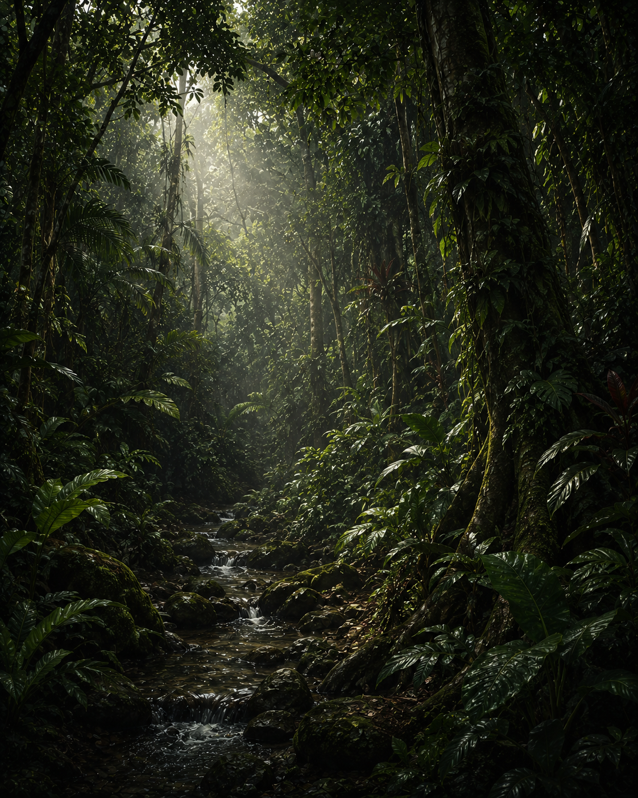
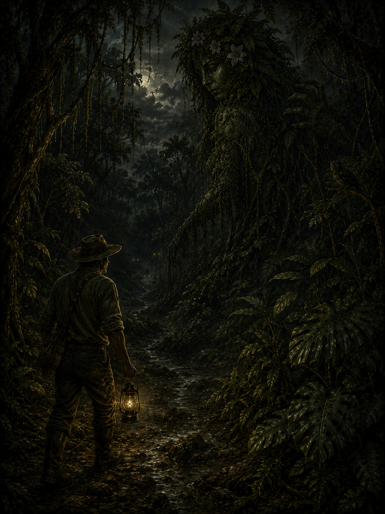
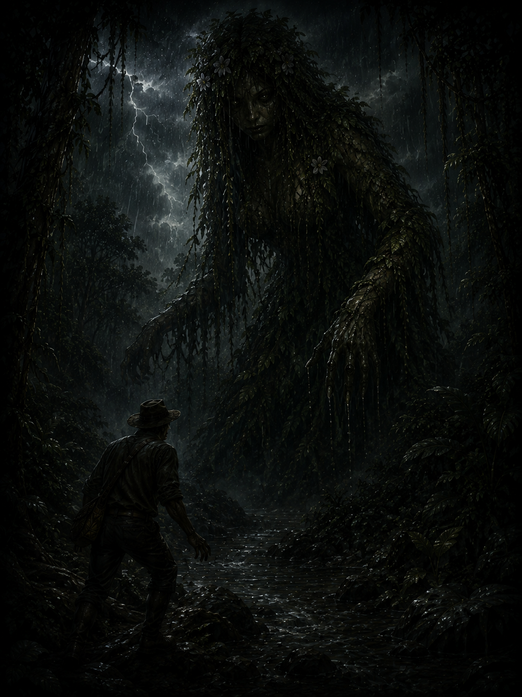
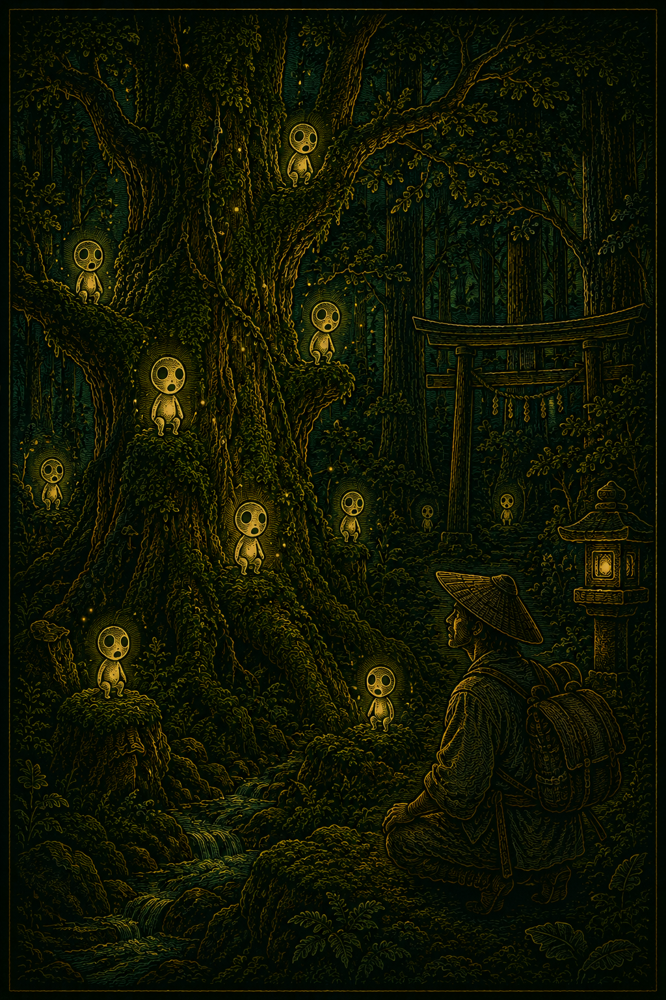
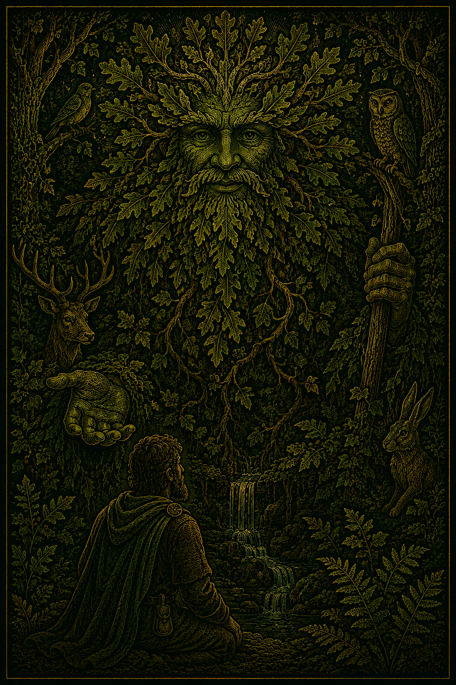

Leshy
Espíritu eslavo que protege los bosques y castiga a quienes dañan la naturaleza.
La Madremonte es uno de los espíritus más reconocidos del folklore colombiano. Se describe como una figura femenina cubierta de hojas, musgo y ramas, protectora de los bosques, montañas y ríos.
Muchos campesinos aseguran haberla visto durante tormentas o en caminos cercanos a la selva.

Según las leyendas populares, La Madremonte castiga a quienes destruyen la naturaleza, invaden tierras ajenas o alteran el equilibrio de los ríos.
Su presencia suele manifestarse mediante fuertes lluvias, neblina espesa y sonidos provenientes de la montaña.


En diferentes regiones de Colombia, los campesinos cuentan historias sobre viajeros que se perdieron después de escuchar extraños sonidos en la selva.
Algunos afirman que La Madremonte protege lugares sagrados y aleja a quienes intentan profanarlos.
La apariencia de La Madremonte cambia según el relato. A veces es vista como una mujer gigante cubierta de vegetación.
En otras historias, aparece como una sombra que surge entre la lluvia y desaparece en la oscuridad.

La Madremonte tiene gran presencia en la región andina de Colombia, especialmente en zonas rurales rodeadas de montañas y bosques.
El mito refleja la conexión espiritual entre las comunidades campesinas y la naturaleza.


La Madremonte representa el respeto por la naturaleza y la importancia de preservar el equilibrio ambiental.
También funciona como advertencia moral dentro de la tradición oral, recordando las consecuencias de destruir el entorno natural.
Espíritu eslavo que protege los bosques y castiga a quienes dañan la naturaleza.

Espíritu japonés que habita los árboles y protege los bosques sagrados.

Figura del folclore celta que simboliza la fuerza y la renovación de la naturaleza.